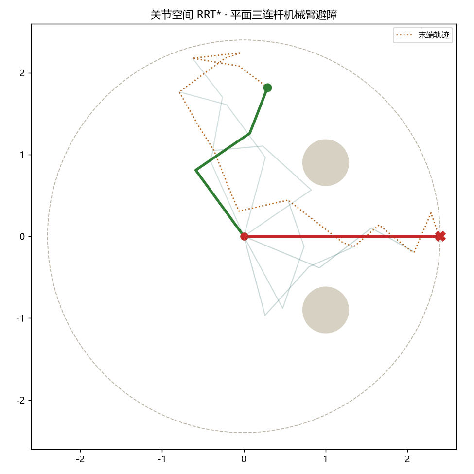

这块分两层：下面先是一个可交互的工作空间演示——把物体当成平面里的一个点， 点"开始规划"看随机树生长、rewire、收敛到无碰撞路径，用来直观理解 RRT*； 再往下是我用 Python 实现的真·多连杆机械臂规划——在关节（构型）空间里做 RRT*， 带正运动学和连杆碰撞检测。这正好落在我学过的理论力学和最优化两块知识的交叉点上。

具身智能的"大脑侧"不只是学习算法，也包括规划——在给定的障碍空间里， 机器人要决定"怎么从 A 到 B"。RRT* 是采样式规划的经典算法， 相比 RRT 它通过 rewire（重连）保证路径代价单调递减，最终收敛到最优。
我在土木阶段学过理论力学（运动学、雅可比、奇异位形）， 在大数据专业学运筹学与最优化（梯度下降、约束优化）。 运动规划正好落在这两块的交叉点上，是我愿意踏实投入的一个方向。